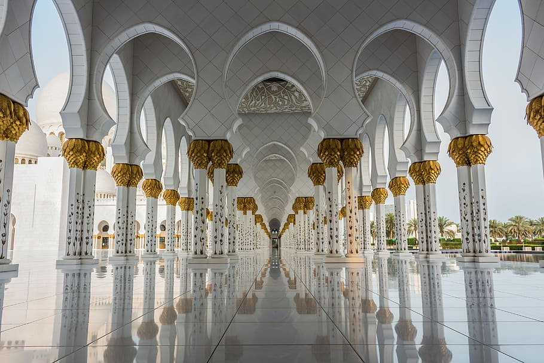
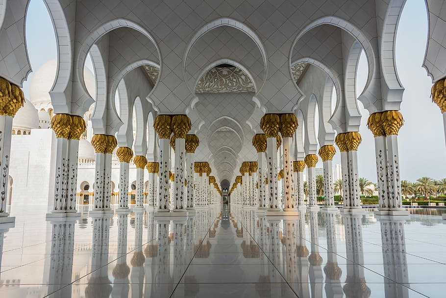

HISTORY
The Taj Mahal, located in Agra, India, is one of the world's most renowned and cherished architectural wonders. Constructed between 1631 and 1653 by the Mughal emperor Shah Jahan in memory of his beloved wife Mumtaz Mahal, the Taj Mahal is a symbol of eternal love and devotion. Its pristine white marble facade, adorned with intricate carvings and delicate inlays, stands as a testament to the unparalleled craftsmanship of artisans from across the Mughal Empire.
Beyond its architectural splendor, the Taj Mahal holds profound cultural and historical significance. It is recognized as a UNESCO World Heritage Site and attracts millions of visitors each year from around the globe. The mausoleum's serene gardens, reflective pools, and symmetrical layout create a sense of harmony and tranquility, inviting visitors to contemplate its beauty and reflect on the enduring power of love.

 
